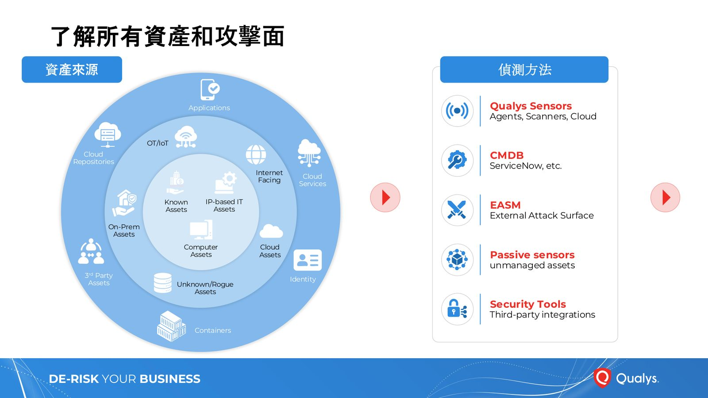
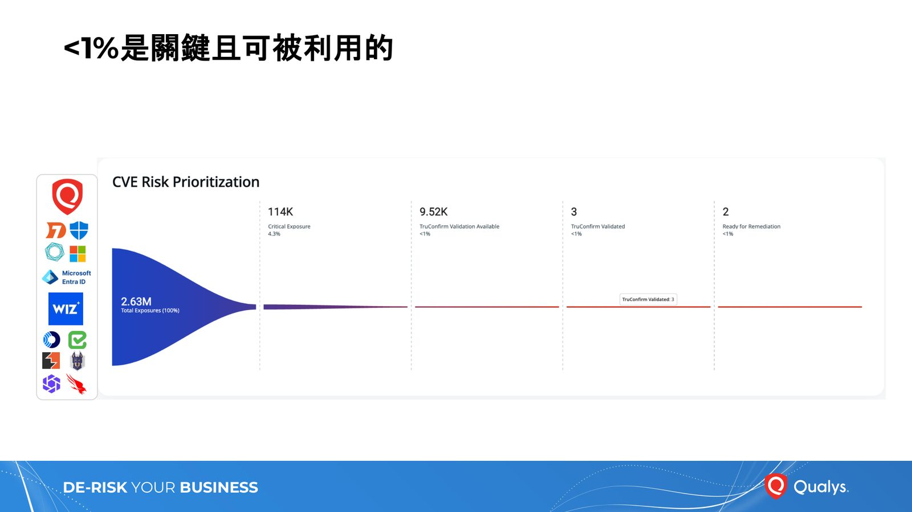
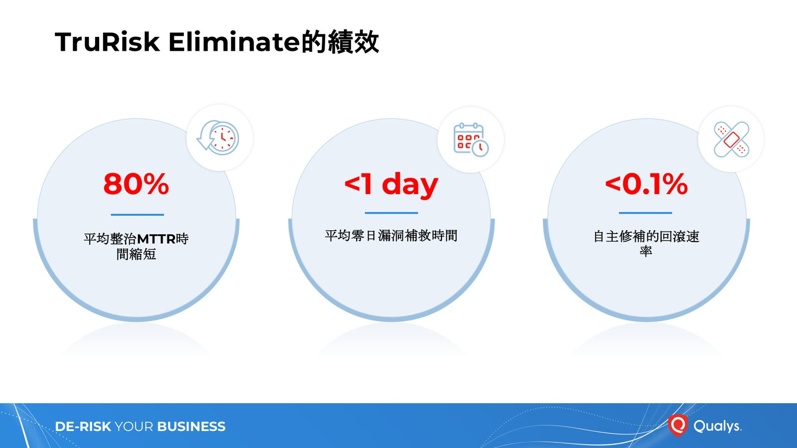
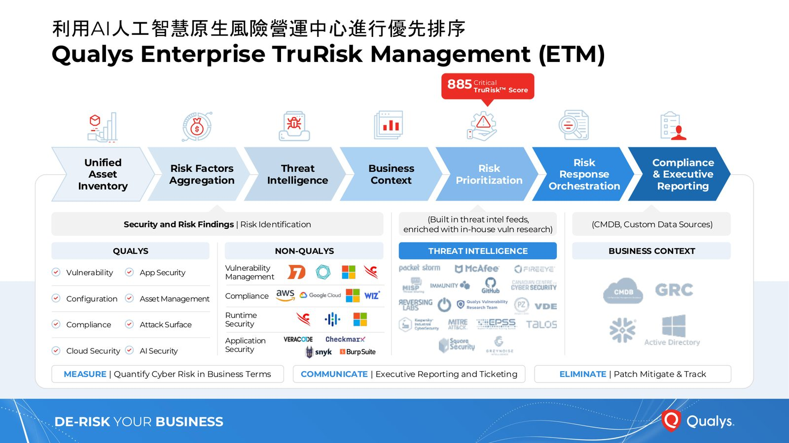

摘要
本場演講由 Qualys 的 Tino Yiu 主講，探討 Anthropic 的前沿模型 Mythos 能自主發現零日漏洞（包括困擾 27 年的 FFmpeg 整數溢位漏洞），並分析這對漏洞管理帶來的衝擊：CVE 揭露量將激增、利用窗口期將以小時計而非以週計。演講提出「AWE < WOW」的預防公式，並介紹 Qualys 如何透過 AI 速度偵測、超優先級處理與零日修復三大步驟來應對後 Mythos 時代的漏洞洪流。
重點整理
- 來自 Anthropic 的前沿模型 Mythos 發現的漏洞中，超過 99% 尚未修復，且成功找出困擾 27 年的 FFmpeg 整數溢位漏洞
- 2022 至 2025 年間僅不到 1% 的 CVE 被武裝化（2025 年為 0.74%），但「漏洞利用」已成為排名第一的攻擊向量，占比 31%
- 中位數利用時間已縮短至 18 天，而中位數 MTTR 為 67 天，AI 輔助漏洞開發進一步壓縮利用窗口
- Qualys 已加入 Anthropic 的 Project Glasswing 與 OpenAI 的 Trusted Access for Cyber 計畫，用於原始碼強化與威脅研究
- Qualys 對關鍵/零日漏洞的中位數回應時間為 12 小時，目標將偵測時間壓縮至 30 分鐘以內，TruConfirm 過去 12 個月已完成超過 800 萬次驗證
重點圖片／架構圖




Mythos 時代：AI 自主發現零日漏洞
Anthropic 的前沿模型 Mythos 非常擅長辨識並利用軟體中的新漏洞，其發現的漏洞中超過 99% 尚未修復，甚至找出了 16 年來自動化測試工具都未能揪出的 FFmpeg 整數溢位漏洞（integer overflow flaw），以及困擾 OpenBSD 27 年的漏洞。Qualys 透過加入 Anthropic 的 Project Glasswing（第二波）及 OpenAI 的 Trusted Access for Cyber 計畫進入 Mythos 生態，用於原始碼強化（掃描自有原始碼找出未發現的漏洞）與威脅研究（漏洞研究與惡意軟體分析），但 Glasswing 合作夥伴被禁止在客戶環境中使用 Mythos，僅限內部使用。
漏洞噪音的數字真相與武裝化比率
根據 Qualys TRU 的研究報告，2022 至 2025 年間，已揭露的漏洞數量從 25,043 個成長到 48,172 個，但武裝化（weaponized）比率始終低於 1%，2025 年為 0.74%。儘管如此，「漏洞利用」已成為排名第一的初始入侵攻擊向量，占比 31%，首次超過「憑證濫用」的 16%。演講預測 CVE 流量將因 AI 輔助發現而持續激增，過去四年漏洞揭露量已成長 6.5 倍；同時利用窗口期將從以週計壓縮到以小時計，中位數利用時間已為 18 天，而中位數 MTTR 為 67 天，意味著修復工作必須以機器速度運作。
預防公式：AWE < WOW
演講提出達成「預防」而非「事後應變」的關鍵公式：AWE（Average Window of Exposure，從漏洞公開揭露到防禦方完成修補或緩解措施之間的時間）必須小於 WOW（Window of Weaponization，從漏洞公開揭露到出現可實際使用的攻擊程式之間的時間）。要解決後 Mythos 時代的問題，需依序執行三大步驟：AI 速度偵測（AI-speed Detection）、超優先級處理（Hyper-prioritization）、以及零日修復（Zero-day Remediation）。
超優先級處理：從資產盤點到證據驗證
此步驟強調先了解所有資產與攻擊面（涵蓋雲端資產、第三方資產、身分、容器、OT/IoT 等），再從資產分類進一步理解商業背景（如業務關鍵性、技術債、緩解控制措施），並運用 QVSS 分數即時優先處理數百萬項曝險。演講也提出 CISO 至今無法回答的「確定性差距」問題：掃描器說有漏洞、CVSS 表示關鍵、補丁團隊問能否打通、審計師問證據在哪。Qualys 的 TruConfirm 以證據為基礎驗證漏洞是否真的可用於生產環境，過去 12 個月已完成超過 800 萬次驗證，且採用零中斷、非阻塞非同步、隱私設計的安全優先架構。
零日修復與 AI 速度偵測
TruRisk Eliminate 提供 Patch（含 AI based 補丁可靠度評分）、Uninstall、Mitigate、Isolate、Custom 等多種修復方式，並透過補丁可靠度評分、無補丁修復方案、分階段部署（deployment waves）與回滾能力建立自主修復的信任，其成效包括平均整治 MTTR 時間縮短 80%，自主修補回滾速率低於 0.1%，平均零日漏洞補救時間低於一天。在 AI 速度偵測方面，Qualys 對關鍵/零日漏洞的中位數回應時間為 12 小時，高優先度供應商為 6 小時，CISA KEV 覆蓋率達 99%，並透過基於版本的快速路徑、每 QID 持續交付、事件驅動代理評估等方式，將目標偵測時間從 12–16 小時壓縮至 30 分鐘以內。